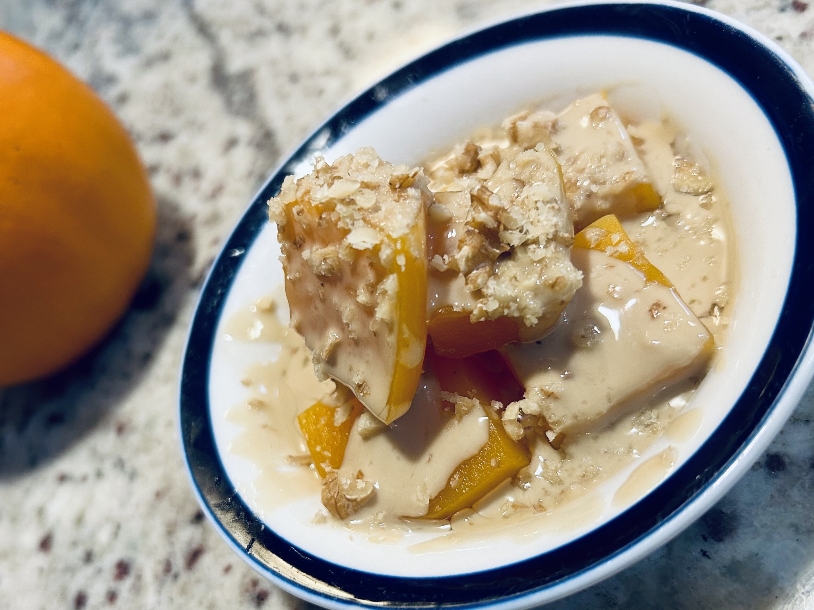
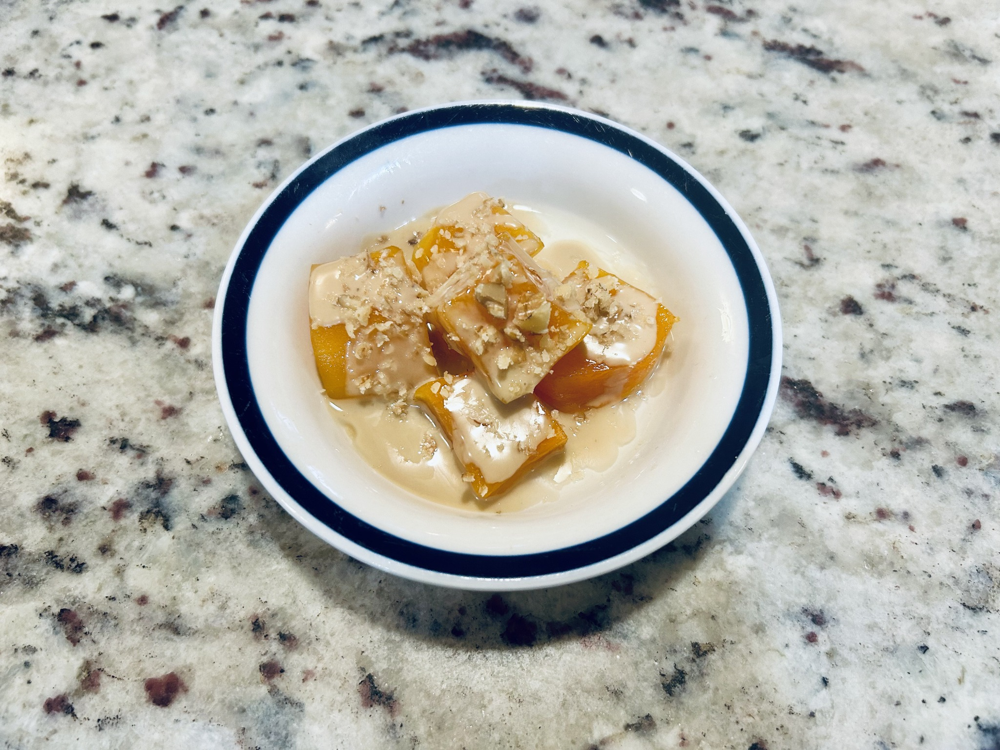

Dessert
Kabak Tatlısı — Squash with Tahini
One of those techniques that feels almost too clever for how simple it is: squash releases its own liquid under sugar, then gently cooks in that syrup before meeting tahini and walnuts.


Ingredients
- 1 butternut squash, about 500 g prepared flesh, cut into chunks
- About 150 g sugar
- Tahini, for serving
- Walnuts, finely crushed with a few larger pieces left for texture
Method
- Put the squash in a saucepan and sprinkle evenly with the sugar.
- Cover and leave for at least 6 hours, ideally overnight in the refrigerator. The squash will release enough liquid to make its own syrup.
- Bring the natural juices gently to a boil, then cook over medium-low heat until the squash is completely tender but still holds its shape, roughly 10–20 minutes depending on the squash and the size of the pieces.
- Let the squash cool in its syrup. Serve warm, at room temperature or chilled.
- Drizzle generously with tahini and finish with finely crushed walnuts and a few larger walnut pieces.
Notes
I almost always make this with squash rather than pumpkin. The technique is the revelation: sugar draws out the squash's own liquid, so it essentially cooks in itself. It adapts remarkably robustly to different squashes; the cooking time simply follows the texture. My version uses less sugar than the recipe that inspired it, and I add only as much syrup as I want when serving.
Adapted from Baking Hermann's Kabak Tatlısı.